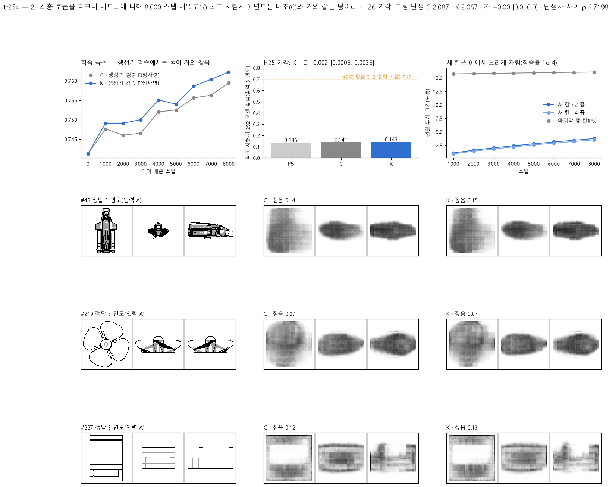

실험 m1_tr0254_h025_여러층
목표 G1.1a 한 장 → 3 면도 · G1.1 사진 → 3 면도(중간 표현) · G1 첫 제품 — 피규어 · 메카 사진 여러 장 + 치수 → 숨은선 3 면도 + 파츠별 CAD · G0 임의의 이미지 → CAD 코드 · 빌린 가정 5: 생성기기하 · 흰바탕 · 렌더화풍 · 정사영 · 시점앎 · 갚는 계획: 학습은 생성기 렌더 그대로(데이터 안 건드림) · 판정은 목표 시험지(원화CAD짝 피규어 · 메카 292 렌더)로 — 생성기기하는 판정에서 갚음 · 흰바탕 · 렌더화풍 · 시점앎은 실물 사진으로 그 뒤 · 정사영은 원근 렌더로 그 뒤 · 목표 시험지 값: 안 잼 (!)
얼린 DINOv2 의 2 · 4 층 토큰을 디코더 메모리에 더해 배우면, 목표 시험지 한 장 3 면도가 선 자리를 더 짚나?
판정 · H25 기각(목표 짚음 K 0.143 · C 0.141 · 차 +0.002 [0.0005, 0.0035]) · H26 기각(그림 판정 C · K 모두 2.09 · 차 0 · 판정자 사이 ρ 0.72) — 2 · 4 층 토큰을 디코더 메모리에 0 에서 시작해 더하고 8,000 스텝 배워도 목표 시험지 3 면도는 대조와 같은 덩어리 · 생성기 지킴은 통과(0.769 대 0.765) · 앞쪽 층에 선 자리 재료가 있는데(탐침 0.70 · 0.74) 디코더가 쓰지 않음 · 새 칸 무게는 마지막 층 칸의 1/4 아래까지만 자람 · 다음 = 재료를 못 쓰는 까닭 가르기(시점 옮기기 없는 입력 시점 과제로 같은 두 갈래 · 새 칸 학습률)
| 가설 | 주장 | 결과 | 근거 |
|---|---|---|---|
| H25 | 디코더에 앞쪽 층(2 · 4) 토큰을 주면 선 자리 재료가 생겨 출력 3 면도가 선 자리를 더 짚는다 | 기각 | 목표 292 모델 짚음 P5 0.1355 · C 0.1406 · K 0.1426 · 뷰별(위 · 앞 · 옆) C 0.129 · 0.148 · 0.145 / K 0.128 · 0.151 · 0.149 · 입력 맞춤별 차 0 ~ 0.4 -0.001 · 0.4 ~ 0.8 +0.003 · 0.8 ~ 1 +0.005 · 굵기 벌점 자 C 0.248 · K 0.236(차 -0.012 [-0.015, -0.010]) · 굵기(목표) C 9.48 · K 10.09 · 생성기 시험 F C 0.765 · K 0.769(지킴 통과) · 생성기 검증 F 8,000 스텝 C 0.760 · K 0.762 |
| H26 | 앞쪽 층 토큰을 주면 사람 눈에도 덩어리가 선 그림으로 바뀐다 | 기각 | 40 모델 × 2 갈래 · 그림 판정 평균 C 2.087 · K 2.087 · 두 판정자 모두 같은 물체의 두 칸에 같은 점수 |
분석
한 줄로
물음: 얼린 DINOv2 의 2 · 4 층 토큰을 디코더 메모리에 더해 배우면, 목표 시험지 한 장 3 면도가 선 자리를 더 짚나?
답: 아니다(H25 · H26 기각). 8,000 스텝을 배운 뒤 목표 시험지 짚음은 손잡이를 넣은 쪽 0.143, 대조 0.141 이었다. 맥락 없는 판정자 둘의 그림 판정도 두 갈래 모두 2.09 로 같았다. 재료는 앞쪽 층에 있는데(탐침 0.70) 디코더가 쓰지 않았다.
왜 이 실험을 했나
tr252 에서 선 자리가 얼린 인코더의 앞쪽 층에 남아 있다는 걸 봤고, tr253 에서 생성기로만 배운 읽기도 피규어에 건너간다는 걸 봤다. 우리 디코더는 마지막 층 토큰만 받는다. 그래서 앞쪽 층을 함께 주는 첫 고침 학습을 작게 돌렸다(도입 관문 D1). 목표는 사진 한 장에서 3 면도, 그다음 CAD 코드다.
바꾼 것 하나
디코더가 보는 메모리에 2 층과 4 층 토큰을 더했다(층 정규화 + 선형 768 → 384). 새 칸은 0 에서 시작해서 처음 출력은 P5 와 똑같다(검사로 확인, 최대 차 0.0). 대조 C 는 손잡이 없이 같은 조건으로 이어 배웠다. 두 갈래 모두 P5 무게, 새 AdamW, 8,000 스텝, 같은 배치 순서다.
결과

| K | C | 판정선 | 판정 | |
|---|---|---|---|---|
| H25 목표 짚음 | 0.143 | 0.141 | 차 +0.05 넘게 | 기각(+0.002 [0.0005, 0.0035]) |
| H26 그림 판정(1 ~ 5) | 2.09 | 2.09 | 차 +0.5 넘게 | 기각(0.0 · 판정자 사이 ρ 0.72) |
| 지킴 · 생성기 시험 F | 0.769 | 0.765 | C − 0.03 아래로 안 떨어짐 | 통과 |
짚음은 정답 선 자리의 확률이 둘레보다 얼마나 높은지를 잰다(정답 1.0 · 2 화소 굵힘 0.43 · 다 칠함 0). 출력 3 면도의 확률 그대로라 문턱이 끼지 않는다.
왜 이렇게 나왔나
확인한 것
- 디코더 출력의 짚음은 P5 0.136 → C 0.141 → K 0.143 이다. 앞쪽 층 탐침(0.70 · 0.74)과는 거리가 멀다.
- 굵기 벌점 자는 K 가 오히려 0.012 낮고, 목표 굵기도 K 가 10.1 로 C 의 9.5 보다 굵다.
- 새 칸의 무게 크기는 8,000 스텝 끝에 2 층 3.74 · 4 층 3.50 이다. 마지막 층 칸 16.1 의 1/4 아래다. 0 에서 학습률 1e-4 로 천천히만 자랐다.
- 입력이 출력 뷰 축에 맞을수록 차가 조금 크다(+0.005 대 −0.001). 판정선에 한참 못 미친다.
- 3,000 스텝과 8,000 스텝 그림 모두 눈으로 C 와 구별되지 않는다. 판정자 둘도 같은 물체의 두 칸에 같은 점수를 줬다.
짐작 (아직 확인 안 함)
- 생성기 학습 신호가 가는 선을 요구하지 않는다. 생성기에서도 디코더 짚음은 0.22 였고(tr252), 이번 생성기 검증 F 는 K 가 0.003 높을 뿐이다. 굵은 띠로도 손실이 충분히 낮으니 새 재료를 쓸 까닭이 약하다.
- 디코더가 입력 시점의 선 자리를 위 · 앞 · 옆 뷰로 옮겨 놓는 길이 없다. 질의는 고정 벡터 + 시점 FiLM 이다. 맞춤이 클수록 차가 조금 큰 것은 이 짐작과 맞지만 약하다.
- 새 칸이 덜 배웠을 수도 있다.
한계
- 한 번만 돌렸다(씨앗 0). 8,000 스텝은 작은 판이다.
- 새 칸 학습률을 따로 주지 않았다. 덜 배움과 「줘도 안 씀」 을 이번 판으로는 가를 수 없다.
- 관문 메모: 기댄 tr252/H21 · tr253/H23 은 지지지만, 실험 사슬(tr246 ← tr241/H2 보류)을 따라 「재검토」 로 표시된다. 판정은 그 자를 쓰지 않는다(카드 「관문 메모」).
배운 것과 다음
선 자리 재료를 디코더에 넣어 주는 것만으로는 덩어리가 풀리지 않는다. 디코더가 재료를 쓰지 않는 까닭을 먼저 갈라야 한다.
- 시점 옮기기 없는 과제로 같은 두 갈래를 배운다. 출력을 입력 시점의 선 지도로 바꾼다. K 가 C 보다 크게 짚으면 막힌 곳은 뷰 옮기기이고(→ 장마다 추론 → 합치기), 같으면 디코더 · 학습 신호 쪽이다.
- 같은 판에서 새 칸 학습률을 10 배로 준 갈래를 하나 더 둔다(덜 배움 가르기).
- 사슬의 재검토(tr241/H2 보류)를 어떻게 풀지는 사용자와 정한다.
실험 기록
- 카드 · 층254.py(검사 · 흐름 · 학습 · 시험 · 시트 · 재기 · 그림) · 잼.json · 흐름.png · 결과.png · 판정/(시트 8 · 판정 A · B) · 원본 out/설명/캐드부품/모델254(K · C 스텝 무게 · 목표예측 · 점수.npz)